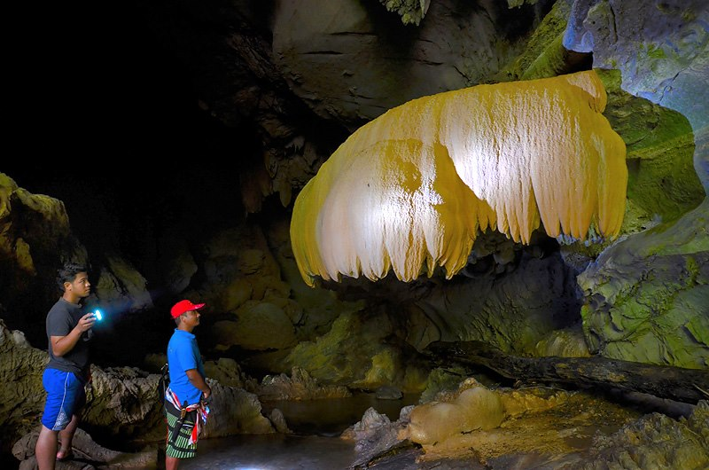
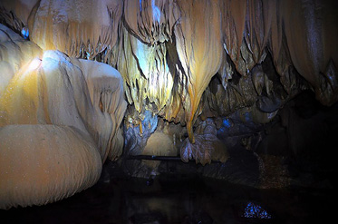
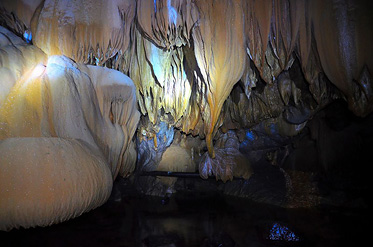

Khao
Sok Travel Guide.
Over
views
Khao Sok National Park is a nature reserve in southern
Thailand containing dense virgin jungle, towerlike
limestone karst formations and the man-made Cheow Lan
Lake. It’s home to rare species such as the giant
parasitic Rafflesia flower, hornbill birds, gibbons and
tigers. The park can be explored by elephant-back
safari, hiking trail, and raft, canoe or kayak via the
Sok river.
Far more than just a side trip from the beaches of
southern Thailand, the magnificent wilds and majestic
mountain lake of Khao Sok National Park are one of
Asia's premier natural wonders. Khao Sok stretches over
some 646 square kms and is part of a greater protected
area that also includes Kaeng Krung and Phang Nga
national parks and Khlong Nakha and Khlong Saen wildlife
sanctuaries. Spanning over 4,000 square km between them,
this is a massive protected area in Thailand, and on a
map it looks like an entire province of nothing but
lakes, rivers, and jungle. If you're going to visit only
one national park in Thailand, Khao Sok is arguably your
best choice.
Due to its rugged, mountainous and expansive terrain,
the park and its surrounds have remained mostly
untouched by people, and today Khao Sok teems with
plants and wildlife. Wild elephants, dusky languars,
leopards, bantung, a range of monkeys, snakes, and over
180 species of bird inhabit the park and surrounding
sanctuaries. Equally impressive are Khao Sok's plant
species, including massive bamboo trees so thick that
anyone standing under them in a down pour will remain
dry, and the Rafflesia Kerri Meijer flower, or simply
"wild lotus" (bua phut) in Thai, which is one of the
largest flowers in the world, reaching a diameter of
over 75 cm when fully mature. The best chance to see one
in bloom is in November or December, but be prepared for
its pungent fragrance that smells something like rotten
eggs.

With
countless hiking trails, waterfalls, caves, and
viewpoints, it's worth taking at least a few days to
explore the park's western area on foot. However, at
least half of the Khao Sok experience is the artificial
Chiew Lan Lake — one of Thailand's most scenic bodies of
fresh water — which features limestone karst cliffs that
rise dramatically from calm, pristine emerald water.
Numerous inlets reach far into the land like long,
watery fingers, karst cliffs of all sizes rise from the
surface of the water, and other worldly caves are found
throughout the lake.
Indeed, exploring Chiew Lan by boat allows visitors a
peak at some of Asia's most stunning natural beauty, a
topography that's been compared to the haunting cliffs
of China's Guilin and Vietnam's Ha Long Bay. For a truly
tranquil experience, spending a night or two at one of
the national park's floating rafthouse villages within
the lake is a must.

Apart
from hiking and exploring the lake by boat, many
visitors take up the opportunity to do guided bird
watching hikes, night safari tours, more extreme
overnight camping treks, canoe trips along the Sok
River, and elephant trekking, all of which are offered
by a plethora of tour companies operating near the
park's western gates.
Orientation
Khao Sok is reached by Rte. 401, which connects Takua Pa
in the west to Surat Thani in the east and runs directly
south of the entire park, which lies within the borders
of Surat Thani province but is far closer to Phang Nga
and the western Andaman coast. There are no roads
running in to the park itself.
The visitor centre, most frequented hiking trails and
most of the accessible waterfalls are all located in the
park's far western side at the village of Khlong Sok. A
small, 1.5 km long access road runs from Rte. 401
directly to the park's front gates, and several
guesthouses, resorts and restaurants are found here.
The pier for Chiew Lan Lake is located some 50 km east
of the visitor centre and majority of guesthouses, near
Ratchaprapa Dam, and this area feels like a totally
separate destination. To get here it's necessary to
first pass through the town of Ban Ta Khun near the
park's southeastern point, which is a long trip from the
western visitor centre. Although Chiew Lan Lake
stretches the entire east to west length of the park and
forms most of the northern border, virtually all of Khao
Sok's land mass from the visitor centre in the west to
Ratchaprapa Dam in the east is covered by rugged
mountains and thick forest and is not accessible to
visitors.
Few if any visitors stay in the Ban Ta Khun area, and
the vast majority who visit Chiew Lan Lake and stay at
its rafthouses, apart from those who have their own
wheels, do so as part of a tour. Aside from the pier,
only a small restaurant, a few souvenir shops, and a
nearby park are all that's found near Ratchaprapa Dam.
Directly in front of the pier there is a small national
park booth where visitors must purchase tickets to the
park if they haven't already done so, but little if any
information is offered here and here and there is no
visitor centre on the eastern side of the park. Ban Ta
Khun, which is 14 km south of the pier, has some local
restaurants and markets but there is currently no
tourist infrastructure there.
 

Along the
access road leading to the gates and visitor centre at
Khao Sok's western end, however, there are plenty of
places to stay and eat within walking distance of the
park and its trails, and this is where the majority of
travellers first arrive. At the park's front gates
visitors are required to pay the entrance fee (200B for
foreigners or 20B for Thais), which is valid for a
period of 24 hours.
After entering the park the visitor centre is located a
short walk from the gates and is staffed by some very
friendly park workers and rangers who speak English well
and are happy to answer questions. They also hand out
decent information brochures, including a couple of
rather vague maps, and can provide info on sights,
hiking trails, and accommodation. There are some shared
and private rooms available here as well,but few
foreigners choose to stay within the park when there are
cheaper and more comfortable guesthouses so close by.
There is also a small restaurant and shop with limited
hours here, but neither seem to see much use — the
restaurant looked abandoned when we visited although the
ranger insisted it did in fact open. All of the hiking
trails in this vicinity begin near the visitor centre
and restaurant area, and there are clearly marked signs
throughout the trails.
Travellers will find just about anything they're looking
for along the 1.5 km long access road just outside the
park, including accommodation to fit all budgets,
convenience stores, restaurants, bars, tour companies,
Internet cafes that typically charge 2B per minute,
motorbike rental, mini bus services, and at least one
ATM located just outside the mini mart next to Herb
Restaurant. There are also a few banks and ATMs in Ban
Ta Khun. We found cell signal to work relatively well
except when hiking several km north of the visitor
centre and in some of the further reaches (particularly
far northern parts) of Chiew Lan Lake. The national park
headquarters can supply basic first aid needs, but
anything more serious will require a trip to the
hospital at either Ban Ta Khun or Takua Pa.
|